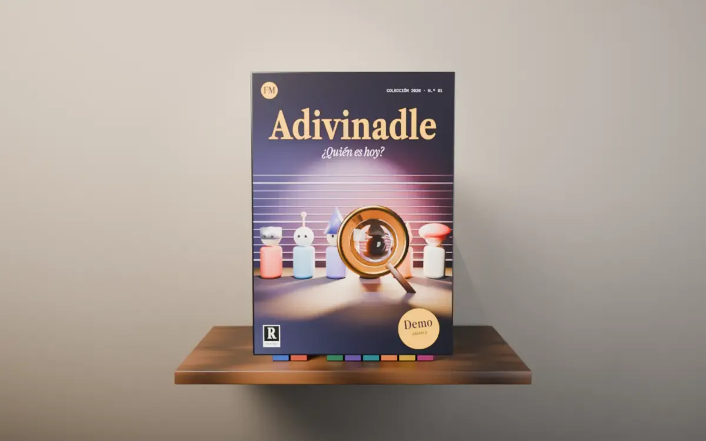
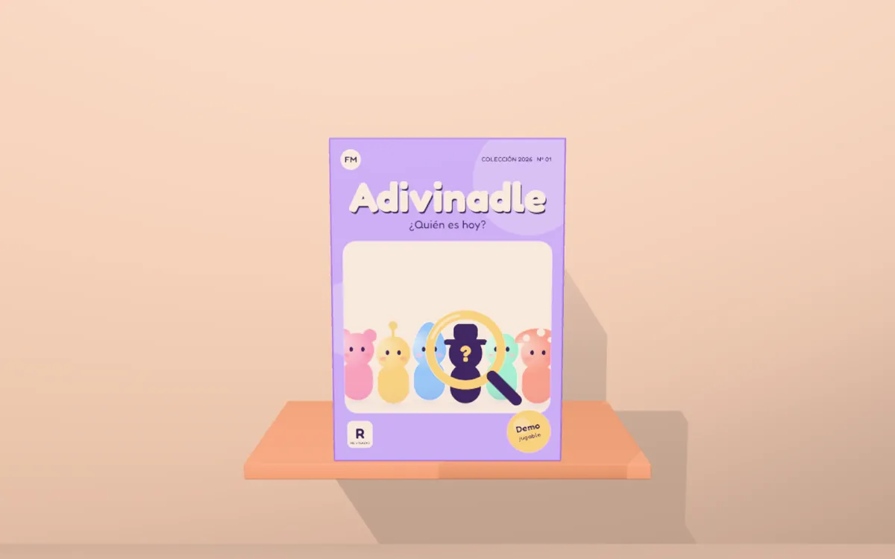
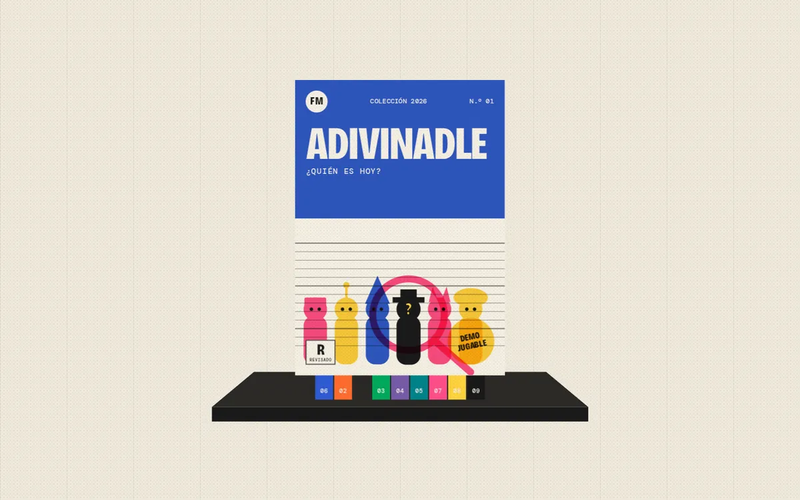
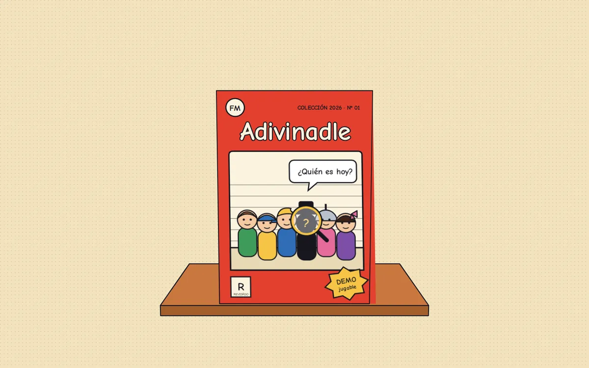

-

A
Fotogramas de Blender
Foto de producto en estudio
Una toma de 150 fotogramas renderizada en la gráfica (Cycles). El gesto y los botones recorren la película hacia delante y hacia atrás.
Probarla -

B
three.js en tiempo real
Juguete de vinilo
El mismo modelo de Blender exportado a glTF; luz, sombras y materiales calculados en el navegador. Lo impreso se pinta en un canvas.
Probarla -

C
CSS 3D y SVG
Cartel suizo en risografía
Cada cara es un bloque de HTML colocado en 3D por el navegador; la ilustración es SVG escrito a mano. Todo el texto es texto de verdad.
Probarla -

D
SVG con 3D propio
Línea clara de tebeo
Un único SVG: la página proyecta las esquinas de cada cara, ordena qué tapa a qué y coloca el dibujo con una matriz. Sin WebGL.
Probarla
Fluidez medida
Fotogramas por segundo que presenta la pantalla durante cada interacción (el peor 5 % entre paréntesis), en Chromium. Con gráfica: aceleración por Vulkan en una RTX 2070. Por software: sin gráfica (SwiftShader), la vara de un portátil modesto. A 1440 × 900 y a 390 × 844 (móvil, densidad 2). B detecta sola cuando no hay gráfica y pasa a un modo ligero (sin sombras, materiales mates y menos píxeles); con su modo normal, por software, se quedaba en 10–15.
Peso y coste
Peso sin comprimir, con fuentes y modelo. Servido con gzip, three.js baja de unos 700 KB a 175 KB. A carga primero el fotograma en el que se entra y los de cada parada; el resto llega por detrás.
| Peso para empezar | Peso total | Cambiar un color o una letra | Un proyecto nuevo | |
|---|---|---|---|---|
| A · Blender | Se cambia en el código del arte y se vuelve a renderizar: unos 10 minutos de gráfica (los dos cortes, horizontal y vertical) y volver a publicar 4,8 MB de fotogramas. | Lo impreso nuevo y una tarde de ajustes de cámara y luz; el render, minutos. El texto queda dentro de la foto: hace falta repetirlo aparte en HTML. | ||
| B · three.js | En vivo: se vuelve a pintar el canvas de esa cara (milisegundos). | El modelo sale del mismo guion de Blender (exportar es un paso); lo impreso es un fichero de dibujo en canvas. Un día para un estilo nuevo. | ||
| C · CSS 3D | En vivo: es texto y una variable de color. | HTML y CSS de cada cara más la ilustración en SVG. Medio día a un día; el oficio está en el dibujo, no en la técnica. | ||
| D · SVG 3D | En vivo: es texto y una variable de color dentro del SVG. | El motor de proyección ya está hecho (unas 120 líneas; el resto es dibujo); cada proyecto es dibujar las caras. Medio día a un día. |
Qué usaría
Una sola caja de datos y poses, y el motor según el estilo. El recorrido (dónde está la caja, cuánto gira, cuánto se abre) es el mismo fichero en las cuatro; el contenido, también. Lo que cambia de una a otra es el arte, y ahí se ve que la coherencia la da la dirección artística, no el motor.
- Estilos con volumen (vinilo, foto de producto, consola noventera) → B: el modelo de Blender en tiempo real. Edición en vivo, geometría real (cantos, bisagra, sombras de contacto) y nada pegado encima.
- Estilos dibujados (línea clara, dibujo técnico) → D: el más ligero y el que mejor aguanta sin gráfica; el contorno es igual en todas las caras.
- Estilos gráficos planos (suizo, risografía) → C: el texto se lee, se selecciona y se traduce.
- A para lo dirigido: el vídeo de presentación, la imagen para compartir o el póster. Para la interacción pesa demasiado y deja el texto dentro de la foto.
Si la pieza principal es B: el modo ligero ya entra solo sin gráfica; sin WebGL, la reserva es D. Y el contenido de cada proyecto, siempre en HTML, fuera de la escena. Queda medir en teléfonos reales (Safari y un Android modesto), la memoria de los fotogramas de A y la carga en 4G.